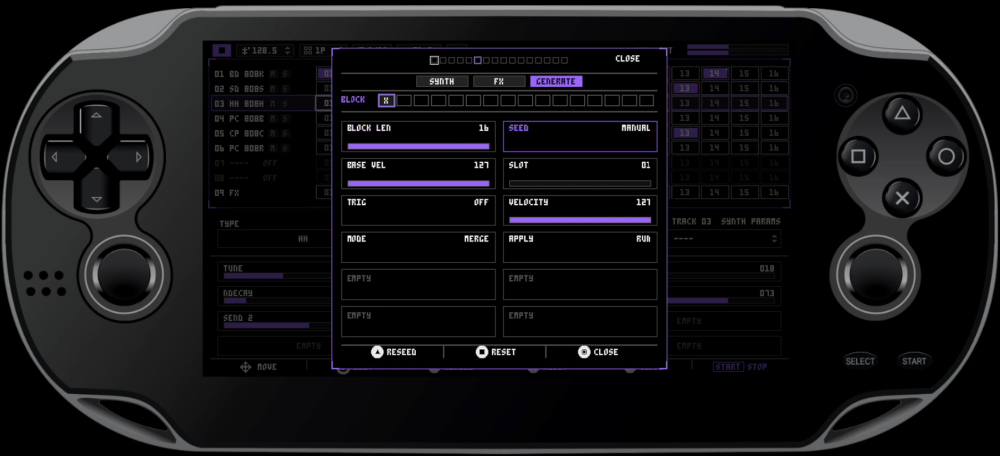
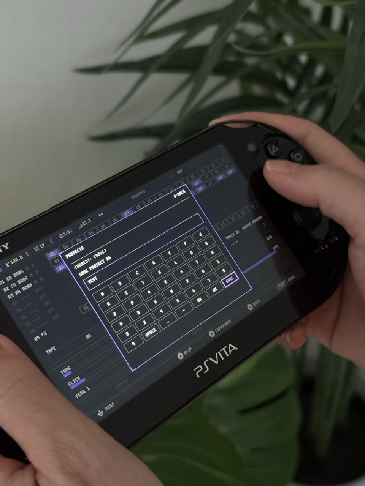

Homebrew drum synth and performance groovebox for PS Vita
DRUMSTREAM
DS-8
Drumstream turns the PS Vta console into an eight-track drum synthesizer, sampler, and performance groovebox.
Built for sketching ideas, building grooves, recording samples, resampling patterns, and performing anywhere with direct physical controls.
DS-8 Drumstream is independent homebrew software. It is not affiliated with, sponsored by, endorsed by, or connected to Sony Interactive Entertainment, Sony Group Corporation, PlayStation, or PS Vita trademarks.

/ Overview ■
A compact drum machine hiding inside the Vita.
DS-8 Drumstream is a drum synthesizer and groovebox for the PlayStation Vita homebrew scene. It turns the Vita into a portable instrument built around eight drum tracks, a step sequencer up to sixty-four steps, and immediate control through the device's physical buttons.
The sound engine is real-time and performance-focused: synthesis, samples, automation, mutes, pattern generation, project saving, presets, and recording all live in one handheld workflow.
Real-time drum engines
Kick, snare, tom, zap, hi-hat, FM voices, drive, pitch, decay, tuning, noise, level, and shaping controls for per-track sound design.
64-step pattern control
Mute, solo, step copy and paste, pattern length, metronome, automation, page changes, and generative pattern tools.
Record and resample
Capture mic or line input, monitor while recording, or bounce the running engine back into the SP sampler track.
Projects and presets
Save full .ds8p projects and browse .ds8s sound presets with preview, rename, delete, and load actions.
/ V0.3 Sampler ■
The SP track brings recording, slicing, and resampling into the pattern.
Record from mic or line input, monitor the input through the main output, or resample the engine output into a sampler track with beat-synced arming and feedback prevention.
Waveform editor
Trim, crop, inspect the waveform, and prepare recordings without leaving the device.
Slice editor
Detect transients, create grid slices, and shape each slice with ADSR and reverse playback.
Tone controls
Bass, mid, treble boost, low-pass filtering, and high-pass filtering per sample workflow.
One-shot mode
Trigger samples directly for drum hits, stabs, captured phrases, and performance gestures.

/ Feature set ■
Built for fast rhythm decisions.
Version 0.3 folds the sampler into the existing synth, sequencer, preset, and project workflow.
New percussion engines
Tom 808, Tom 909, Zap, and FM Hi-Hat join the existing drum synthesis voices.
Step FX
Per-step play conditions for every 1st, 2nd, 3rd, or 4th pass, ratchets with flat, fade, and rise velocity shapes, and microtiming nudge up to ±6 ticks.
Preset browser
Save, load, preview, rename, and delete .ds8s presets. A preview voice lets you audition sounds without changing the current track.
Smoother workflow
Track mute fades avoid abrupt cuts, and the improved keyboard interface makes saving projects and presets faster.
/ Foundation ■
Everything from earlier builds still matters.
DS-8 already includes FM Kick, FM Snare, click-free monophonic retrigger crossfades, binary .ds8p project saving, cursor-based naming, unsaved change detection, toast notifications, and a deep pattern generator.
Pattern generator
Manual, All On, All Off, Alternate, Every N, Euclidean, Random, and Preset seed types with velocity and trigger overrides.
Transport
Step Edit auto-advance, 16/32/64-step patterns, beat-start emphasis dots, page toasts, and CPU overload indication.
Automation
Per-step parameter changes, precision mode, automated-parameter filtering, analog acceleration, and send automation.
Project system
Save, load, Save As, delete, and new project flows with confirmations and on-screen keyboard naming.
/ Disclaimer
Independent homebrew software.
DS-8 Drumstream is homebrew software and requires a jailbroken PS Vita console capable of installing .vpk files.
DS-8 Drumstream and Intermynd Instruments are not affiliated with, sponsored by, endorsed by, or connected to Sony Interactive Entertainment, Sony Group Corporation, PlayStation, or PS Vita trademarks. Product names and trademarks belong to their respective owners and are used only to describe platform compatibility.
DS-8 is in active development. Bugs, rough edges, performance behavior, audio behavior, file compatibility, and controls may change in future versions.
/ Download
Get the current DS-8 build.
The latest public download is hosted on Itch.io. Install only if you understand the homebrew requirements for your Vita.